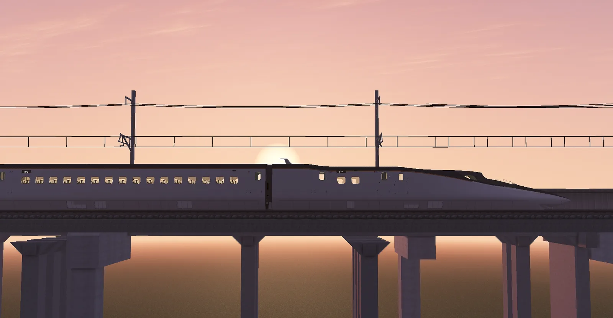
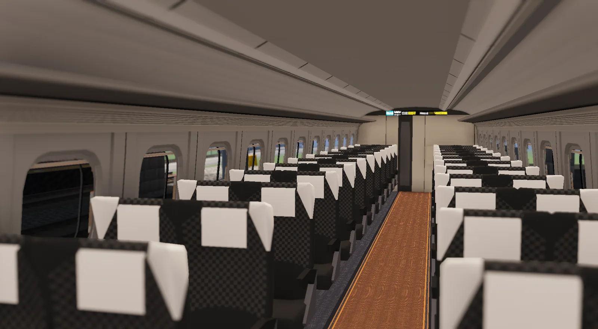
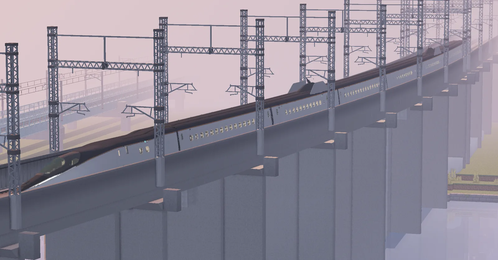
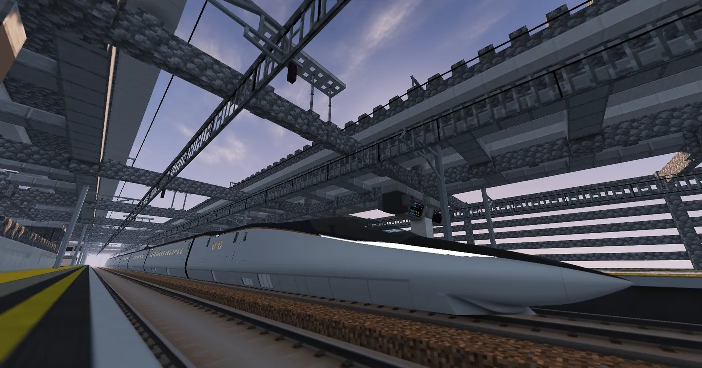
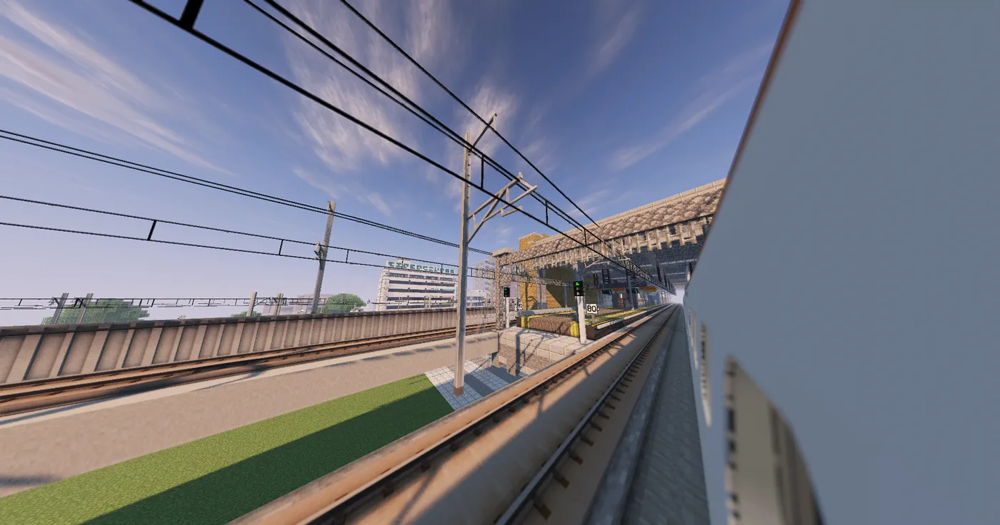
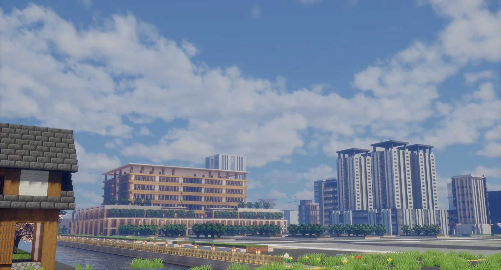

新勝守
直接轉乘可直接持光瀨都市鉄道車票和高速鉄道車票，由 2F 轉乘通道的檢票閘門，直接連接到新幹線車站月台轉乘。

DAY TRIP
早上出發，在目的地盡情停留，傍晚再搭高速鉄道回來。從出發到返回，一天之內就能完成。
新勝守 → 新岩沢
–新勝守 首班–所要時間（新勝守→新岩沢）在新岩沢・高之川市盡情遊玩
–首班抵達到末班發車之間，最長可停留新岩沢 → 新勝守
–新岩沢 末班時刻依目前的時刻表資料自動計算；尖峰時段約每 8 分鐘一班。
ROUTE MAP
新勝守至東平倉由光瀨都市鉄道管轄，東平倉至新岩沢由白令鉄道管轄。新岩沢為目前開業的終點。
FLEET
2026 年登場，擔任万瀨高速鉄道的所有列車。




TRANSFER
各站的轉乘方式不同，出發前先確認。
可直接持光瀨都市鉄道車票和高速鉄道車票，由 2F 轉乘通道的檢票閘門，直接連接到新幹線車站月台轉乘。
請由幸村／新光瀨站北口出站，依指標徒步前往新光瀨站搭乘。
可直接持光瀨都市鉄道車票和高速鉄道車票，由 1F 聯絡通道進入高速鉄道站內。
持光瀨都市鉄道車票前往高之川市中心，請在本站轉乘秋葉鉄道新都心線，並另外購買秋葉鉄道新都心線的車票。

TIMETABLE & TICKET
高速鉄道為全車指定席，沒有立席特急券；票價另計。
| 區間 | 乘車券 | 指定席特急券 | 合計（單程） |
|---|
NEWS